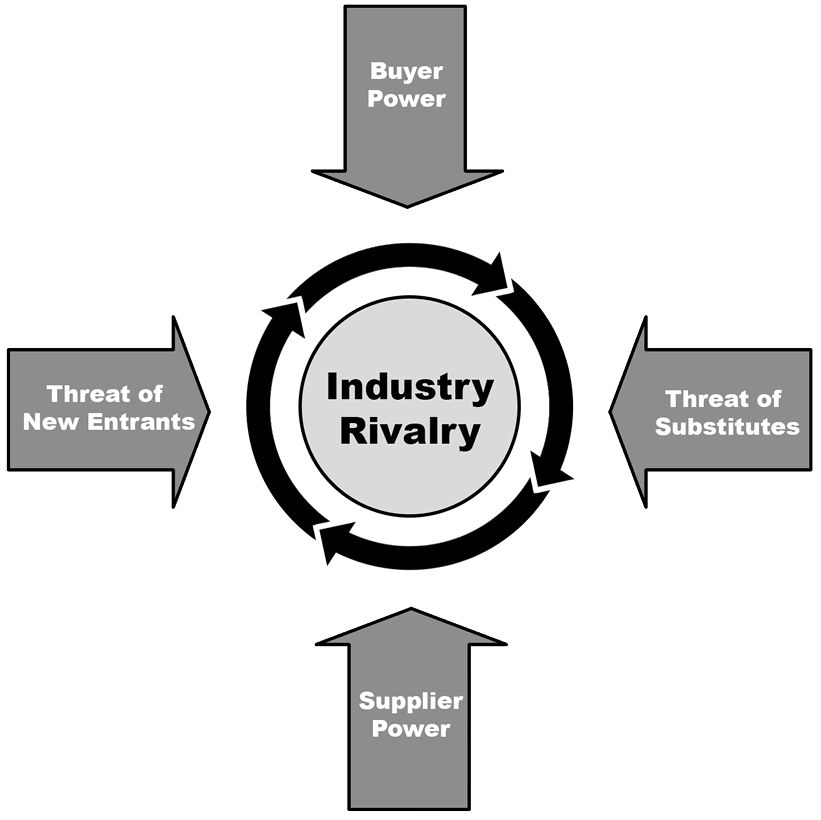

You have your
vision. Perhaps, to customers and to your team, you sell a world where medications are safe, trusted, and reliably taken. Where people don't wind up in the hospital because of bad medication interactions. Where people don't find themselves lost in search results, fretting about side effects that have negligible risk. Where people take the medications they're prescribed at the appropriate dosage, at the right interval—for as long as they need it.
That's your vision, and it's motivational and inspiring. But it isn't enough. You need to understand how that vision will be achieved.
The strategic framework explains the principles behind that vision. It helps connect the dots between feature ideas, team strategy, and company strategy.
The strategic framework can look very different from one strategy to another. You'll need to identify which principals, insights, or decisions are important drivers of the strategy. Then, depending on how complex and controversial your strategy is, you'll figure out how much explanation you need.
Sometimes, all that's needed is a few paragraphs with a simple explanation of the approach, such as "discover and remove each of the roadblocks a customer faces in this flow." Other times, the framework needs to include pages of explanation and diagrams to explain how all the pieces fit together.
One great example of a strategic framework is a memo sent by the CEO of Slack, We Don't Sell Saddles Here
.
1
In it, Stewart Butterfield lays out that their vision is organizational transformation and dramatically improved communication. Their strategy, however, is not to toute how their features will help businesses. That's useless; people don't know they want Slack, so they won't care about the details.
Instead, their strategy is to sell innovation—the transformation Slack brings—and do an "exceptional, near-perfect job of execution." He lays out that, since people don't know they want Slack, there is no tolerance for flaws. They must be excellent.
By aligning your team behind a vision and a strategy, your team will not just be more motivated, but also more empowered to make more effective decisions. The strategy ensures that your team won't just be moving quickly; they'll also be moving in a direction that has a good chance of success. And, if there happens to be a flaw in your strategy, it'll be much easier to spot and fix when you have something concrete for your teammates to review.
Responsibilities
Learn your business, market, and
industry to spot opportunities and obstacles ⚡
The best product doesn't always win.
TiVo created the first popular DVR (Digital Video Recorder), and its product was much better than the cable company DVRs. But, the cable companies bundled their DVRs with their cable subscriptions. TiVo couldn't compete with that distribution model.
Products need great distribution, a great
business model, a great brand, and great competitive positioning to win. All these aspects should play into your strategy.
Here are some questions to consider as you're developing a product strategy.
Business:
- What is the overall company mission, vision, and strategy? Competitive positioning? Top priorities?
- Are any of the company's priorities new or shifting?
- Are there any key company milestones coming up, such as a big conference or a fundraising round?
- What does the company see as its strengths, weaknesses, opportunities, and threats? See "SWOT Analysis" in Chapter 16
.
- What are the different business teams within your company, and what are their goals?
- What is the company's business model?
- How does your team fit into all of the above?
Market and industry:
- Who are your target users? What identifies them? How do they behave? How do they choose products?
- Who are the competitors in your space? How are they similar to or different from you? What do they do well? Where do they leave an opportunity?
- How is your product currently viewed in the market?
- What are the different ways to slice up the market? How big are each of those slices? What are the requirements to go after the different slices?
- What are the trends that could affect your business?
- What opportunities or obstacles do the above research lead to?
If your team has a product marketer, partner with them to explore the business, market, and industry. Otherwise, you'll need to explore this on your own.
Get crisp on your
target
customer and pain points ⚡
It helps to be very clear on who your target customer is and what their top pain points are. Small differences in how people understand the target customer can create big problems later on.
Mckenzie Lock saw this when she was head of product at a consumer-facing startup. When she started, some people thought their customers' top pain point was the amount of time it took to find the product they wanted. Lock and team had the strategic intuition that saving money was a more meaningful value proposition than saving time. This theory was supported by the data: one of their most popular features was real-time price notifications.
She and her team invested in user research to validate their intuition. One thing they tried was running Facebook Ads with different value propositions. They saw the ads focused on saving money converted better than the others. That research gave her the confidence to reorganize the company’s product strategy around getting their customers the best deals.
Surprisingly, many companies don't have an accurate view of why
customers are choosing their products. They might know what features are being used, but haven't connected that to the deeper problems the product solves for people.
To figure out which details matter, consider factors that would affect:
- Ad targeting
- Positioning and messaging
- Sales outreach
- Customer training
- The size of the potential customer base
- Feature prioritization.
For example, will you start with power users or basic users? Will you be upselling existing customers or gaining brand new ones? Which competitors do you think you can win customers from? Which use cases will be a good match, and which are out of scope?
How painful are the pain points you're going after? Does your solution feel 10x better for your
target customers? It's no use to go after a huge market if you can't convince its customers that your product is worth the effort to switch to. It can be a good strategy to start with a smaller market that you know you can win, and expand from there.
You can narrow in on your target customer and their pain points by partnering with marketing, sales, customer success, solutions engineers, user research, user operations, and any other customer facing teams.
Growth Practices
Address questions and tradeoffs in your strategic framework ⚡
The goal of a strategic framework is to create alignment. It needs to answer the questions that people are likely to challenge you with, and it needs to provide the context and guardrails to ensure your team doesn't go off track.
If you listen well, it can be easy to figure out which questions to address.
- Is your manager constantly asking about a pet project? Make sure the strategy explains why it's in or out.
- Does the head of sales always ask about expansion? If so, include a section on expansion.
- Is there a recurring debate over prioritization? Make sure the strategic framework addresses it.
- Is there another direction the team might have gone? Explain why you chose the one you did.
- What solutions are your team considering? The strategy should provide a philosophical framework that steers people towards the best ones.
Once you have the first draft, invest the time to simplify and clarify the strategy. If it feels complicated, keep upleveling until you get to the fundamentals. For each item, ask why, and then group things together that share a common "why."
Align your strategy with the bigger picture ⚡
At most companies, there will be a hierarchy of strategies that mostly aligns with the org chart. Each feature area has a strategy that fits into the larger product strategy, which might in turn fit into the strategy for a product line, which fits into the divisional strategy, and ultimately into the company strategy.
Your strategy needs to align with all of the strategies above it and fit in well with all of the other strategies at the company. It's no good to focus your team on a strategy of winning an international market if your company strategy is to stay domestic.
Make sure you seek out the other strategies at the company. Some companies will keep this information in a centralized place, while at others you'll need to reach out to people to ask if there are any strategic documents or presentations you can see. Not every team will have a vision, strategic framework, and
a roadmap, but most will have at least one or two of them. You can also ask various leaders directly about their strategy when you set up "getting to know you" meetings.
When you write your strategy, don't assume that other people will understand how your strategy fits into the bigger picture. Make the connection explicit. Use exact phrases from the higher level strategy. Explain the step-by-step reasoning of how your strategy serves the goals of the higher level strategy. If the company is focused on growing revenue and you want to prioritize user growth, you'll need to lay out the exact path that turns user growth into revenue.
Concepts and Frameworks
Customer Purchase Decision-Making Process
There are many frameworks to model the decision-making process, but two of the most common are AIDA and
REAN.
AIDA models customer decisions as Attention (or Awareness) -> Interest -> Desire -> Action.
-
Attention:
You need to get the customer's attention somehow. A snappy email heading, perhaps? A snazzy ad? Or maybe a mention from a trusted friend or website?
-
Interest:
Now that you have the customer's attention, you need to get them interested in your offering. What are the advantages or benefits of your product?
-
Desire:
With the customer's interest piqued, you need to convince the customer that they want your product.
-
Action:
Finally, with the customer desiring your product, they take action to purchase the product.
REAN expands this to add on post-purchase behavior.
-
Reach:
The customer is aware of your product.
-
Engage:
The customer is engaged and considering your product.
-
Activate:
The customer takes action to purchase the product.
-
Nurture:
The customer has purchased the product, and it's now your responsibility to nurture this relationship.
You can use these frameworks to think about the market you want to go after and where you'll need to direct your attention. You might find that getting the customer's attention will be fairly easy, but the "action" part (getting the user to actually switch from your competitor to you) will be more difficult.
Marketing Mix (4 Ps)
The "Marketing Mix" (also called the 4 Ps) is a way to understand the different aspects of a product's approach to marketing.
-
Product:
This is, of course, the actual item being offered. It should cater to a customer's wants or needs.
-
Price:
The price will determine how many and what type of customers purchase the product.
Pricing can be more complex for online products and services as compared to physical products. For example, an online storage service could have a one-month
free trial, followed by monthly or yearly
subscriptions (which are discounted for non-profits), with additional "a la carte" purchases for an automatic backup utility.
-
Promotion:
Promotion encompasses all forms of advertising, PR, word of mouth, and sales staff. For example, promotion for a kids' product could include freebies given out to influential bloggers.
-
Place:
A physical product's distribution ("place") can include things such as online sales through Amazon, opening their own stores like Apple, distribution in retail stores, and sales through their own website. Greater distribution is not always better; many companies prefer to control the sales experience by limiting the sales channels. For online products, "place" might just be a single website, or it might include bundling the product with another company's offerings.
For online products, promotion can become very complex. A lot of products are competing for the customer's attention, and advertising is often insufficient to drive sales.
SWOT Analysis
SWOT analysis is a structure to analyze companies and products.
-
Strengths:
Strengths are the internal
factors that benefit a product. This can include anything about the costs, product features, company culture, reputation, infrastructure, or other aspects. For example, in considering launching the Kindle, one of Amazon's strengths would be that it is already the place where customers buy books online.
-
Weaknesses:
Weaknesses are internal
factors that introduce challenges for a product. For example, since Amazon had not created a physical device prior to the Kindle, a weakness might be that it doesn't have experience with manufacturing.
-
Opportunities:
Opportunities have an external
focus and relate to factors such as market growth, technology changes, competition, and legal regulations. For example, people growing comfortable with purchasing music online created an opportunity for people to buy eBooks online as well.
-
Threats:
Threats are the external
challenges a product faces. For example, the publishers' digital rights contracts posed a threat to licensing content for the Kindle.
The following matrix represents the SWOT structure:
|
GOOD
|
BAD
|
|
INTERNAL
|
strengths
|
weaknesses
|
|
EXTERNAL
|
opportunities
|
threats
|
This framework can help decide
not only whether you should pursue an opportunity but also what strategies would further that pursuit.
The
Five Cs (Situational Analysis)
The Five Cs provide an overview of the environment for a product or decision.
-
Company:
This encompasses all aspects of a company, including its products, culture, strategy, brand reputation, strengths, weaknesses, and infrastructure.
-
Competitors:
Competitors include direct competitors, potential competitors, and substitute products. For each of these, a discussion could encompass market share, trade-offs, positioning, mission, and potential future decisions.
-
Customers:
This includes aspects such as demographics, purchase behavior, market size, distribution channels, and customer needs and wants.
-
Collaborators:
Collaborators include
suppliers, distributors, and partnerships. A discussion here might include what makes particular collaborators valuable and how they enable success.
-
Climate:
Climate includes aspects such as regulations, technology changes, economic environment, and cultural trends. A hostile climate can kill a business decision, while a positive one can greatly facilitate success.
This framework can guide discussions on whether you should launch a product and what the strategy should be.
Porter's 5 Forces
Porter's 5 Forces is a framework for industry analysis.

This industry analysis can be useful for understanding a company's decision.
-
Industry Rivalry (Rivalry Among Existing
Competitors):
More competitors generally leads to more heated competition, as does more direct competition. If many companies make the same product and they are not strongly differentiated, this will generally drive down prices for everyone. Many things can influence rivalry, such as market growth (growing markets enable competitors to expand without fighting with each other for market share) and high costs to exit the market (companies are reluctant to leave).
-
Buyer Power:
If a company or industry has relatively few buyers (for example, only the government and big banks), or some buyers have a very disproportionate share of revenue, these buyers will wield considerable power. This power allows them to affect prices, feature sets, delivery timelines, and other aspects.
-
Supplier Power:
Like buyers,
suppliers gain influence over a company if the company is heavily dependent on them. This commonly happens if a company has a component that it exclusively (or almost exclusively) purchases from a single source.
-
Threat of Substitutes:
Competition exists not just from direct competitors, but also from substitute products. For example, even if Amazon were the only seller of electronic books (and therefore there was no direct competition), the prices of e-books would still be influenced by "competition" from physical books.
-
Threat of New Entrants:
With few barriers to entry in an industry, companies are constantly vulnerable to competition. If they price their goods too high, another company will enter the market and capture market share. Barriers to entry can include things such as proprietary technology, massive economies of scale, strong brands, or anything that's very difficult to do.
Consider, for example, the PC market. Buyers have considerable power, as many sales come from just a few retailers. Suppliers also have considerable power since there are limited manufacturers of certain components and high switching costs in changing manufacturers. On the positive side, there is some differentiation between competitors and limited substitutes. The market has moderate barriers to entry (branding, etc.). There are worse markets to be in, but there are also many better markets.
This framework could be useful in discussing whether or not you should enter a specific market. What's the industry like? If it's hyper-competitive, you might choose to avoid it.
Pricing Models
People generally use any or all of the following to price a product:
-
Cost-Plus Pricing:
Examine the costs of your product and set your price a little higher than that. This is tricky because there are generally fixed costs and marginal costs, so it's difficult to assess the cost per unit. Additionally, many online services don't have direct costs, and the costs don't determine whether this is a reasonable
price. However, the cost of your product does suggest a minimum price (presuming you want to make a profit) and indicates something about your competitor's prices.
-
Value Pricing:
Some products have a clear and direct value to the customer. In those cases, you might be able to estimate how much money/time you are saving (or gaining for) the customer and price accordingly. This will suggest a maximum price.
-
Competitive Pricing:
A great number of products are priced by just looking at the competitors' prices. This is partially rational (because your customers might otherwise select your competitors) and partially due to laziness (because people don't know how else to price a product). Pricing lower than your competitors is not necessarily a good thing; it can signal lower quality to customers, and it might start a price war. However, competitive pricing can still be a starting point from which you decide to price higher if your product is positioned as a premium product.
-
Experimental Pricing:
In some cases, it's possible for a company to experiment with different prices and then correlate price with sales volume. Proceed with caution here, though; inconsistent pricing can frustrate or anger customers.
A thorough company might use cost-based pricing, value pricing, and competitive pricing to triangulate on a good price, and then tweak it slightly with experiments.
With these general approaches in mind, there are a number of pricing models to consider:
-
Free, Ad-Supported:
Many startups try this approach, but few succeed. Advertising alone is rarely enough to support a company, unless there is something unique about your product which makes advertising particularly effective.
-
Freemium:
In a freemium model, a basic level of the product is free but a premium version is paid. This can be good for attracting customers. However, you have to keep a close eye on your costs for supporting these free users, as well as on your conversion rate.
-
Tiered:
A company might offer multiple levels of pricing, segmented by volume, customer type, or features. You don't want to go overboard, though; too many tiers can be overwhelming for customers.
-
À
La Carte:
A company can price each feature or service separately, letting the customer choose exactly which "upgrades" they would like. This can often lead to customers paying more than they would have for a bundled suite of features. Some customers will like this flexibility but others will be overwhelmed by it. The support costs of dealing with so many different suites of features can also be challenging. Mobile Apps often go this direction—paying for the initial download and/or for in-app add-ons.
-
Subscriptions:
Many services offer subscriptions to their product or service, particularly in the case of web applications. Some products are simultaneously available for purchase and as a subscription. This enables products to capture customers who only need temporary usage and may not be willing to make the upfront investment in a full purchase.
-
Free Trial:
Short-term trials can be a good way to let customers experiment with a product before the purchase, as a way to "hook" them. Trials can be bounded by time, number of uses, or particular features (e.g., you can import but not export). You have to be careful to ensure a good enough experience that customers will enjoy the product but not so good that they don't desire to upgrade.
-
Razor Blade Model:
A company can sell one component (e.g., razors) at, near, or below costs with the expectation that an add-on component (e.g., razor blades) will bring in additional revenue. This can work very well if the customer can only buy these add-on components from you. If there are other competitors with compatible add-ons, then you run the risk of customers purchasing the product from you cheaply and then the add-ons from your competitor.
A pricing model could use a combination of many of these attributes. For example, a company could offer subscriptions to its service, priced differently depending on the size of the customer's business, with additional upgrades purchased à la carte.
If you're having trouble creating a pricing model, you can also hire a pricing consulting firm. These companies have extensive experience with pricing and can help you choose the right packaging, pricing, and discounting model to optimize revenue. Neeraj Mathur, VP of Products at ForUsAll, shared the two scenarios where a pricing consultant is especially useful:
When you are at a very small company where no one has done pricing before, a consultant can bring a wider understanding of the market and options. When you're at a large company, a consultant can bring the "leave no stone unturned" mentality that will help find opportunities to optimize price and cost, such as connecting you to cheaper sources of materials.
Key Takeaways
-
The best product doesn't always win
: It's not enough to focus on building something that customers love. To succeed, you also need to consider the market, pricing, competitive environment, macro environment, company goals, and other business factors. This is where all of your business skills come into play.
-
Focus on tradeoffs and principles
: The most useful part of many strategies are the opinionated stances they take on tradeoffs. The strategy needs to highlight the contrast between the chosen path and potential alternatives. Ideally, most tough product choices can be decided by looking back at the strategy.
-
Connect the dots
: People feel more motivated and do better work when they understand how their work is strategic, important, and connected to the company's mission. The strategic framework explains how the team's work connects to the bigger picture.